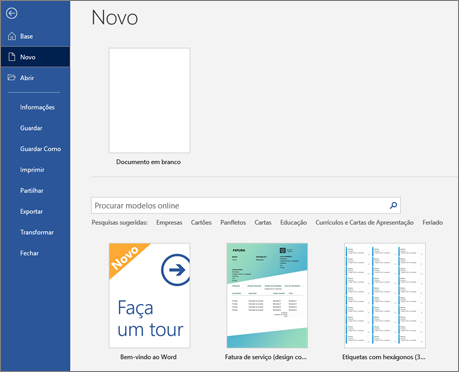
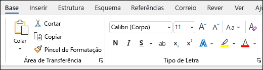
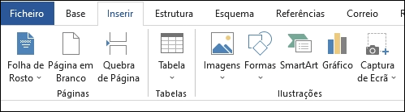
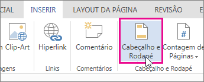
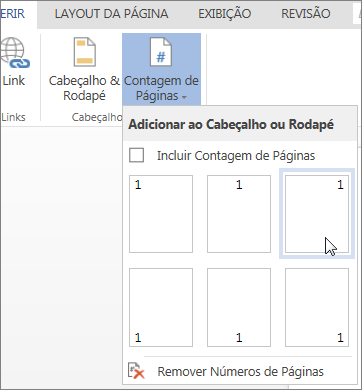
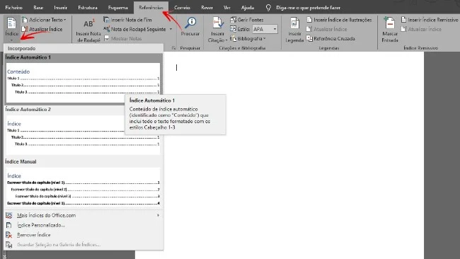
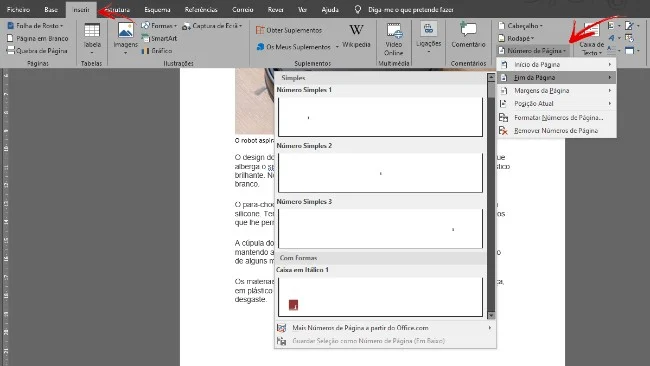
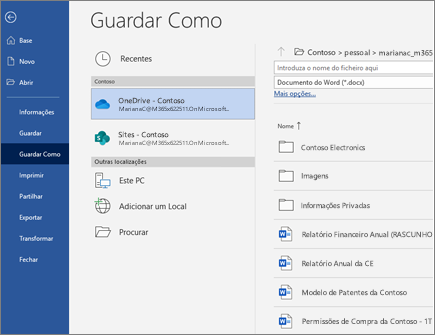
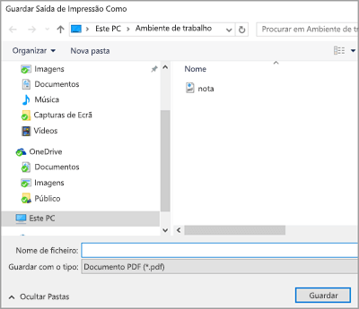

Criar Novo Documento
No separador Ficheiro , selecione Novo. Selecione Documento em branco ou faça duplo clique numa imagem de modelo ou escreva o tipo de documento na caixa Pesquisa para modelos online e prima Enter.
Adicionar e formatar Texto
Clique na sua nova página em branco e escreva algum texto. Selecione texto para formatar e selecione opções de tipo de letra no separador Base : Negrito, Itálico, Marcas, Numeração e muito mais.
Adicionar Imagens e Formas
Selecione o separador Inserir. Selecione o que pretende adicionar: Tabela selecione Ícone do botão Inserir tabela do Outlook Tabela, paire o cursor sobre o tamanho que pretende e selecione-o. Imagens selecione Botão Inserir uma imagem Imagens, procure uma imagem no seu computador, uma imagem de stock online ou uma pesquisa de imagens no Bing. versões mais antigas do Word podem terImagens Online no friso junto a Formas selecione Ícone do botão Formas do Word W32 Formas e escolha uma forma na lista pendente.
Adicionar um cabeçalho ou rodapé
Vá até Inserir > Cabeçalho e Rodapé para adicionar cabeçalhos e rodapés a seu documento. Clique em Opções para escolher como quer que eles apareçam.

Adicionar números de página
Clique em Inserir > Números de Página e, em seguida, escolha na galeria onde quer que os números de página apareçam.
Insere o índice
Para inserir, nas opções presentes em "Referências", temos a opção "Referências" que devemos selecionar, sendo apresentados os modelos disponíveis.
Adicionar a numeração de páginas no documento
Para tal, basta aceder ao menu "Inserir" , em seguida, selecionar a opção "Número de Página".Aí é possível escolher a formatação da numeração, além de outras possibilidades de personalização do aspeto como, por exemplo, o alinhamento.

Guardar o seu documento no OneDrive
Se o seu ficheiro for guardado no OneDrive, as suas alterações serão automaticamente guardadas.Selecione Ficheiro > Guardar Como. Selecione OneDrive. Digite um nome e selecione Guardar. 
Para guardar o seu ficheiro como PDF, selecione 'Ficheiro>', guarde como PDF. 